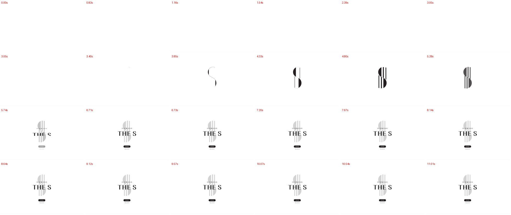

원본과 나란히 비교
다섯 시안 모두 고른 레퍼런스 사이트를 PC(1440)와 폰(412) 폭으로 직접 열어 글자 크기·여백·배치 순서를 잰 뒤, 같은 순서와 비례로 다시 만들었습니다. 왼쪽이 원본, 오른쪽이 BUILDGO 시안입니다. 이미지를 누르면 크게 봅니다.
다섯 시안 모두 첫 화면 맨 위에 ‘어떤 분야의 전문가를 찾고 계신가요?’ 검색창을 넣었습니다. 도아 로고 인트로는 홈페이지와 따로 떼어 인트로 모음에서 봅니다. 검색창은 고객 요청으로 넣은 것이라 원본에는 없습니다. 아래 비교 이미지는 검색창을 넣은 지금 화면입니다. 인트로 5종 따로 보기 →
1안 · 권장
첫 화면·소개 = Spence (영국 건설사, Awwwards 우수작) · 업체 목록 = Procore 업체 찾기
- 순서를 원본 그대로: 큰 사진 첫 화면 → 어두운 회사 소개 → 사진·글이 번갈아 나오는 세 칸 → 사진 가득한 문의 → 안내 카드 3장 → 점무늬 문의 띠 → 바닥글
- 첫 화면: 큰 현장 사진 위 가는 글자는 원본 그대로, 맨 위에 질문(88px)과 큰 검색창을 넣었습니다(원본 제목은 117px — 검색창 자리 때문에 줄임). 좌우 여백 91px, 소개 제목 78px, 칸 제목 54px는 원본과 같습니다
- 따로 보는 인트로(약 8초): 가는 선 두 줄이 화면을 세 칸으로 나누고 설계 · 시공 · 분양 사진이 열린 뒤, 선이 사라지며 한 장의 현장 사진으로 합쳐집니다 → “세 회사에 따로 맡기던 일을 도아는 한 회사가 한 번에.” → 도아 로고 → “더 저렴합니다.”
- 짙은 남청 한 가지(#0f232e)에 주황 포인트 하나 — 그라데이션·광택 없음
- 업체 목록은 Procore처럼 왼쪽 체크 칸 + 두 줄 카드(회사 이니셜 칸·지역·종류·공종·면허)


1안 인트로 0~10초 — 마지막 줄이 인트로가 끝나고 열리는 검색 첫 화면
2안 · 밝고 단정하게
첫 화면·소개 = TANDEM (미국 개발·시공사, Awwwards 우수작) · 업체 목록 = Architizer 설계사무소 찾기
- 순서를 원본 그대로: 가운데 큰 문장 → 사진 띠 5장 → 화면을 채우는 큰 글자 → 소개 문단 → 넓은 사진과 4칸 요약 → 무늬 카드 3장 → 진행 순서 줄 → 연락 카드 2장 → 큰 이름 바닥글
- 미색 바탕 #f2f3ed(원본 #f2f3ed), 첫 문장 76px(원본 80px), 큰 글자는 화면 폭에 맞춰 원본처럼 가득
- 첫 문장 자리에 “어떤 분야의 전문가를 찾고 계신가요?”와 큰 검색창(고객 요청으로 추가)
- 따로 보는 인트로(약 9초): 도아 로고가 선으로 그려지고 → 로고 테두리가 커다란 창으로 열려 설계 · 시공 · 분양 사진이 넘어가고 → 다시 로고로 돌아와 “그래서 더 저렴합니다.”
- 업체 목록은 Architizer처럼 위쪽 선택 칸 + 줄마다 대표 실적 사진 3장


2안 인트로 0~10초
3안 · 국내 대형 건설사 결
전체 = 현대건설 홈페이지
- 순서를 원본 그대로: 사진 가득한 첫 화면 → 가운데 포인트색 제목과 숫자 4칸(선 그림) → 회색 소식 띠 4칸 → 포인트색 바로가기 띠 → 사업 분야 사진 벽돌 배치 → 사진 띠와 흰 버튼 3개 → 짙은 바닥글
- 본문 폭 1100px·왼쪽 170px(원본 같음), 큰 제목 46px(원본 50px), 섹션 제목 34px(원본 34px)
- 현대건설의 초록 자리에 BUILDGO 파랑 한 가지
- 첫 화면 사진 위쪽에 질문과 파란 검색 버튼이 붙은 큰 검색창(고객 요청으로 추가)
- 따로 보는 인트로(약 8초): 파란 선 위로 “설계 + 시공 + 분양”이 올라오고 “= 도아”로 완성 → “2023년까지 도아가 직접 설계한 건수 109건”(도아 홈페이지 첫 화면 내용)이 0부터 올라감 → “그래서 더 저렴합니다.”


3안 인트로 0~10초
4안 · 도아 인트로 → 전문가 검색
인트로 = 일광 더에스(로고가 선으로 그려지는 인트로, 고객이 보내 준 참고) · 화면 = BERCH (스위스 건설·사업관리 회사)
- 화면을 한컴AI 결(검정 바탕 · 보라 · 주황 빛 · 둥근 카드)에서 BERCH 짜임새로 바꿨습니다. 빛 · 둥근 카드 · 글자 아이콘을 모두 빼고, 흑백 현장 사진 · 가는 선 · 큰 글자로만 정리했습니다
- 순서를 원본 그대로: 흑백 사진 첫 화면 → 큰 문단 → 가는 선 숫자 칸(빈 칸엔 대각선) → 넓은 흑백 사진 → 줄 목록(전문가 · 업체) → 사진과 글 나란히 → 진행 순서 → 어두운 사진 마무리 → 바닥글
- 첫 제목 72px(원본 72px), 문단 48px(원본 48px), 숫자 72px(원본 72px), 목록 제목 32px(원본 32px), 작은 글자 13.6~14px(원본 같음), 좌우 여백 43px(원본 43px), 포인트색 금색 #C99700(원본 같음)
- 원본에 없는 것: 첫 화면 큰 검색창(고객 요청). 숫자 칸은 도아 홈페이지에 있는 ‘2023년까지 직접 설계 109건’과 사업 분야 5개
- 따로 보는 인트로(약 8초): 도아 로고가 흰 선으로 그려지고 → 설계 · 시공 · 분양이 사진 위로 지나가고 → “한 회사가 한 번에 하니까 더 합리적인 가격으로.”



인트로 참고: 일광 더에스 인트로 0~11초
5안 · 설계에서 준공까지
전체 = Kononenko 건축사무소 (Awwwards 오늘의 사이트)
- 순서를 원본 그대로: 사진 가득한 첫 화면 → 가운데 아주 큰 제목 → 큰 사진 → 작은 정보칸과 큰 문단 → 큰 문장과 공종별 업체 표 → 도면에서 건물로 → 찾는 것 3가지 → 마무리
- 가운데 제목 131px(원본 131px), 큰 문장 88px(원본 88px), 문단 30px(원본 30px), 흰 바탕에 검정 하나
- '도면에서 건물로'는 내리면 철골 창고 선 도면이 실제 사진으로 바뀌고, 왼쪽 단계(설계 → 업체 선정 → 견적 비교 → 자재 준비 → 시공)가 차례로 켜집니다
- 첫 화면 사진 위에 아주 큰 검색창 — 입력칸 자체에 “어떤 분야의 전문가를 찾고 계신가요?”(고객 요청으로 추가)
- 따로 보는 인트로(약 8초): 도아 로고가 설계 도면처럼 가는 선으로 그려진 뒤 채워지고 → 설계. 건물 선 도면 → 시공. 아래부터 실제 사진이 차오름 → 분양. 완공 사진 → “세 단계를 한 회사가 맡으니까 더 저렴합니다.” → 완공 사진이 화면 가득 커지며 끝납니다


내릴 때 장면 네 컷 — 도면 → 사진

5안 인트로 0~10초